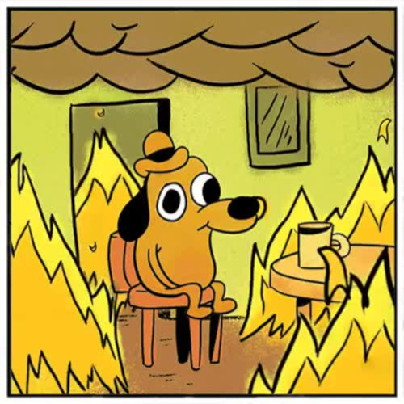
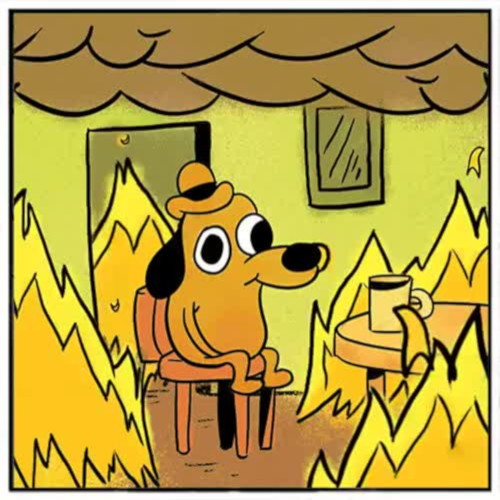

Meme History is the Best History
 


Can you remember life before memes? If you’re under 30, probably not. Internet memes can take various forms, such as images, videos, GIFs, and various other viral sensations. Characteristics of memes include their susceptibility to parody, their use of intertextuality, their propagation in a viral pattern, and their evolution over time. To pay tribute to some of the most culturally important works of art in the history of humankind, here are the funniest memes of all time.
 Feeling a little confused or skeptical? We give you this screengrab from Season 2, Episode 6 of Futurama, “The Lesser of Two Evils.” It offers the best facial expression for all those moments of I’m not quite sure, but something doesn’t feel right here. Also evidenced in all photos from our last birthday party. In the weeks leading up to the start of the Futurama new season in 2012, Comedy Central aired several commercials featuring Fry using the style and phrasal template of "Not Sure if X". Amongst original ones, these also used featured various popular versions of the phrase found online. On June 20th, 2012, Fry appeared at the end of the opening sequence of the new episode in the style of the phrasal template along with the caption "Not sure if new episode, or just rerun of episode I watched drunk".
Feeling a little confused or skeptical? We give you this screengrab from Season 2, Episode 6 of Futurama, “The Lesser of Two Evils.” It offers the best facial expression for all those moments of I’m not quite sure, but something doesn’t feel right here. Also evidenced in all photos from our last birthday party. In the weeks leading up to the start of the Futurama new season in 2012, Comedy Central aired several commercials featuring Fry using the style and phrasal template of "Not Sure if X". Amongst original ones, these also used featured various popular versions of the phrase found online. On June 20th, 2012, Fry appeared at the end of the opening sequence of the new episode in the style of the phrasal template along with the caption "Not sure if new episode, or just rerun of episode I watched drunk".